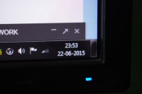
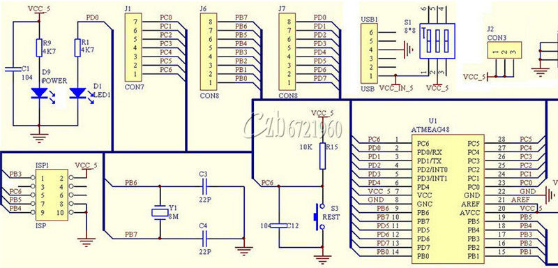
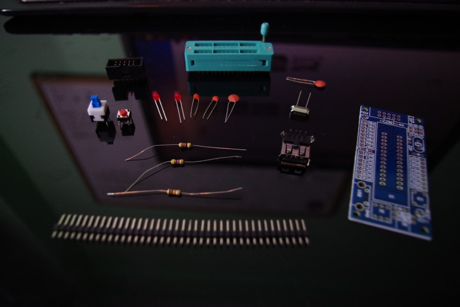
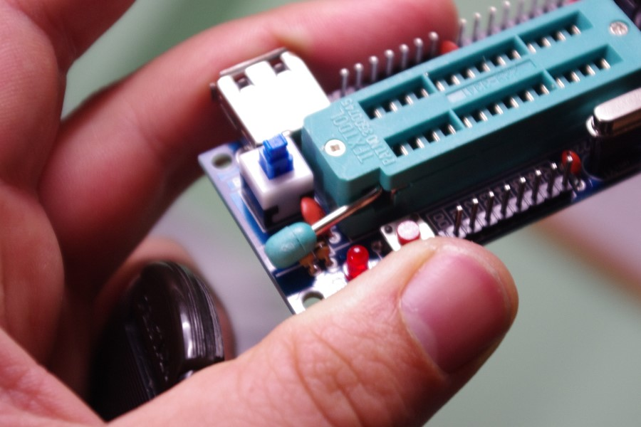
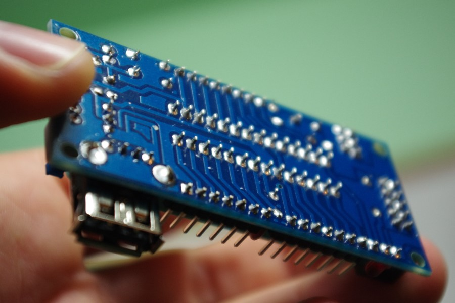
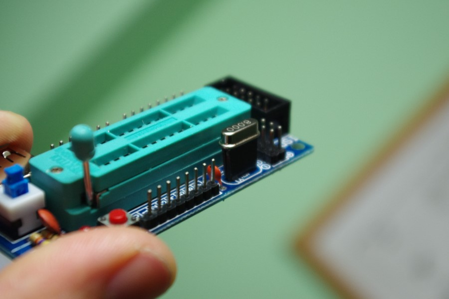
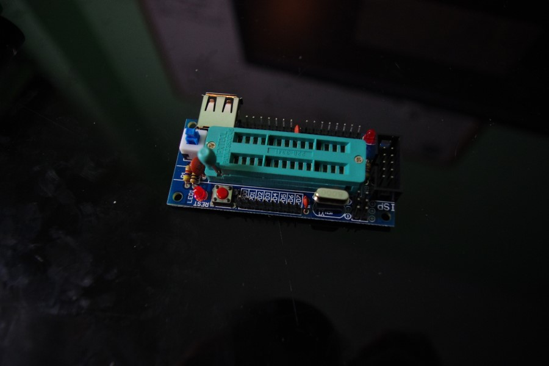

ATMEGA Dev Board Kit Assembly (ebay) - 2015.06.23
- Sessão: Tinker sessios para descomprimir.
- Modo: DIY
- Duração: +- 30 minutos
- Objectivo: Soldar a placa de desenvolvimento que o Master JA aconselhou à malta para queimar os próprio boots dos nossos arduinos.
- Resultado: Uma peça de EbayWare pronta para ser testada

O bicho em questão é este aqui > ATmega8 ATmega48 ATMEGA88 Development Board AVR (NO Chip) DIY Kit (apx 2.eur)
Esta é a placa nº1 de duas, sendo que uma delas vai ser oferecida ao lab como DonerWare para que tenhamos lá sempre uma placa acessível para quem precise de queimar boots de raiz.

O circuito provisionado pelo vendedor numa imagem de muito pouca qualidade.

A board tem impressas todas as informações necessárias, só me surgiram dúvidas no momento de soldar os condensadores cerâmicos, mas uma rápida consulta no circuito resolveu isso. existe um sector que tem 22 apontado perto do oscilador, ambos os condensadores cerâmicos de 22 picofarad são para soldar nessa zona.

O design da board não é perfeito, um dos condensadores cerâmicos emperna com a manete de mudanças :).

Behold the beauty of perfect solder chrome :P

A conselho do Master JA, procedi a um hack simples e adicionei um header fêmea com 3 pinos, de onde removi o pino do meio para que se possa mudar o oscilador conforme seja necessário para flashar varios tipos de atmega.

Falta agora que o Master JA nos ensine a usar esta peça de EbayWare :)
Abraços e Bons Hacks ;)
V. altLab - Host